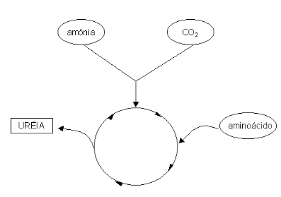
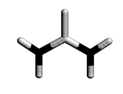
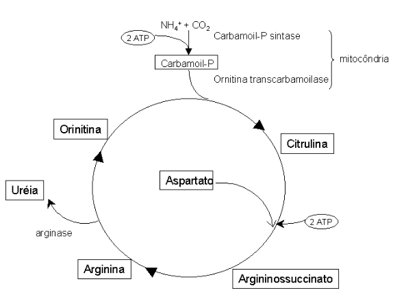

Ciclo da Ureia
Introdução
O ciclo da uréia serve para produzir uréia. A uréia é a forma que o animal encontrou pra se livrar da amônia, a qual é muito tóxica para os tecidos. Bom, então pra que fazer amônia, se ela é tóxica? A amônia é necessariamente liberada quando aminoácidos são degradados pelo metabolismo. Não há saída. Toda a vez que a célula pega um aminoácido e o quebra para fins próprios, uma molécula de amônia é liberada. Acontece que a amônia eleva facilmente o pH dos tecidos, o qual não pode subir mais do que o da própria água, em torno de 7, caso contrário a célula pode ter problemas. Neste caso, o organismo transforma a amônia tóxica em uréia, que não eleva o pH, e elimina essa uréia produzida através da urina.
A uréia é uma molécula pequena, feita com um pedaço de amônia, um pedaço de aminoácido e dióxido de carbono (CO2). A uréia assim formada pelo fígado é transportada para os rins e excretada na urina. Mas, como o próprio nome da rota informa, a produção de uréia se dá num ciclo, o que significa que, assim como no ciclo de Krebs, há uma regeneração do composto inicial que a produziu. Rota cíclicas do metabolismo são muito importantes, pois a velocidade do ciclo pode ser sintonizada com as necessidades da célula.
Assim, se a célula estiver muito alcalina, com muita amônia sendo produzida em seu interior, o ciclo da uréia pode aumentar sua velocidade, reduzindo a quantidade de amônia tóxica disponível. De forma contrária, se o tecido estiver mais ácido, a velocidade do ciclo da uréia pode ser reduzida para reter amônia no mesmo, corrigindo o seu pH.

Detalhes
Os animais produzem continuamente amônia, NH4+, derivada do metabolismo de aminoácidos e compostos nitrogenados na urina. A amônia tóxica deve ser eliminada pelo organismo, e este o faz dependendo de sua condição ambiental. Assim, procariotos e peixes elimininam amônia pela água, répteis, anfíbios terrestres e aves pela produção de ácido úrico (aves não se podem dar ao luxo de carregar uma bexiga e excesso de água em vôo), e mamíferos, pela produção de uréia, a qual responde por 90 % dos compostos nitrogenados da urina nestes últimos.

Alguns animais do deserto, contudo, como o rato canguru, nunca bebem água, vivendo de água metabólica, e convertendo seus compostos nitrogenados em ácido úrico, para conservar água que seria utilizada na formação de sua urina.
A estrutura da uréia é bastante simples, H2N-CO-NH2, com seus nitrogênios sendo supridos por uma molécula de amônia (por desaminação de um Glu pela Glu desidrogenase) e de um Asp, e seus átomos de carbono e oxigênio, por um CO2. Assim, a uréia, forma menos tóxica da amônia, é basicamente formada pela condensação de amônia com dióxido de carbono. A uréia é produzida no fígado e transportada no sangue até os rins, para excreção na urina.
A lógica da via envolve uma condensação de precursores na mitocôndria, clivagem e liberação da uréia no citosol, com consumo final de 3 ATPs. As duas primeiras reações ocorrem na mitocôndria. A primeira envolve a formação inicial de carbamoil-P a partir de NH4+ de Glu e de CO2 por sua sintase, que requer N-acetilglutamato como coenzima, com gasto de 2 ATPs.

O N-acetilglutamato é sintetizado a partir de acetil CoA e Glu, e sua disponibilidade é peça chave na regulação do ciclo da uréia. Posteriormente, ocorre a formação de citrulina, pela condensação de ornitina com o carbamoil-P formado, a qual é transportada ao citosol. Ornitina e citrulina são aminoácidos não incorporados em proteínas, por serem desprovidos de códons. Segue-se a síntese de argininosuccinato, com a segunda molécula de amônia cedida pelo Asp, e com gasto de 1 ATP, e sua hidrólise, liberando fumarato e Arg. O primeiro pode se converter a malato para re-entrada na mitocôndria, enquanto que Arg é clivada pela arginase, quase exclusivamente hepática, produzindo ornitina e uréia, e regenerando o ciclo.
Como o Asp e o fumarato podem conectar o ciclo da uréia com o ciclo de Krebs, a rota é denominada “bicicleta de Krebs”. A uréia formada difunde-se do fígado aos rins, passando pelo sangue. Uma pequena parte, contudo, difunde-se do fígado ao intestino, e é clivada a CO2 e NH4+ pela urease bacteriana. Esta amônia pode ser reabsorvida ou perdida nas fezes.
Fontes de amônia no organismo envolvem proteínas e aminoácidos da dieta (aminotransferases e Glu desidrogenase), Gln renal e intestinal (glutaminase, importante no equilíbrio ácido-básico), catecolaminas (degradadas pela amina oxidase), purina e pirimidinas. Na circulação, a amônia é transportada na forma de uréia para filtração glomerular, e na forma de Gln, importante em músculo, fígado e cérebro, onde exerce papel de detoxificação de NH4+. O mecanismo de toxicidade da amônia parece envolver uma alteração da Glu desidrogenase, liberando grandes quantidades de NH4+ e \(\alpha\)-cetoglutarato, esse último reduzindo o ciclo de Krebs, essencial em orgão vulneráveis como o cérebro.
Aplicação
Produção animal e medicina veterinária
Uréia e biureto são fontes de nitrogênio para a síntese de aminoácidos em ruminantes. Esta disponibilidade também envolve a degradação de proteínas da microbiota ruminal naqueles. A amônia ruminal tem oscilação fisiológica de 30 a 80 mg/l. Em relação à urina, herbívoros a possuem mais alcalinizada (pH 8.0) do que carnívoros (pH 6.5), com o volume excretado variando desde 60 ml diário, por animais domésticos, até 15 litros, por cavalos e bovinos.
A uréia existe naturalmente no ciclo alimentar dos ruminantes, calculando-se em torno de 0,5 g/dia a introdução da molécula no rúmen, através da saliva. A uréia administrada na alimentação animal possui várias funções para o metabolismo, dentre as quais podemos citar uma desnaturação parcial de proteínas da ração, silo ou feno, e uma proteção contra o desenvolvimento de bactérias, além de constituir-se de uma fonte adicional de nitrogênio, não protéico. Tanto em animais em crescimento com em engorda, a uréia pode substituir parte dos suplementos protéicos convencionais.
Animais muito jovens não devem receber uréia pelo fato do rúmen dos mesmos ainda não estar suficientemente desenvolvido e, portanto, apto para utilizar satisfatoriamente aquele produto. Dependendo do objetivo proposto, se semiconfinamento ou suplementação a pasto, a uréia pode ser fornecida em mistura de concentrados em percentagens que podem variar de 3 % a um máximo 5 %, sempre em administração progressiva. É plausível também a utlização de mistura com melaço (90 %) e uréia (10 %), associada a outras fontes de proteína energia, afim de se obter resultados satisfatórios de ganho de peso.
Em vacas leiteiras de alta produção, a suplementação de uréia pode comprometer o produto de ordenha, visto que a uréia reduz a palatabilidade do alimento, que nesta fase deve ser consumido em grande quantidade. Limita-se seu uso, neste caso, ao redor de 1 %.
A taxa sanguínea da uréia varia dependendo do percentual de proteínas na ração animal. A uréia administrada como fonte de nitrogênio não protéico (NNP) pode oferecer, entretanto, diversos problemas. Entre esses, são conhecidos sua baixa aceitabilidade e digestibilidade animal, ineficiência na conversão de nitrogênio para proteína microbiana ruminal, toxicidade, e segregação quando misturada a farelos e rações.
Quando consumida em maiores quantidade, a uréia pode ocasionar inquietação, surdez, tremores, salivação excessiva, respiração ofegante, descontrole da micção e defecção, enrijecimento das pernas, entumescimento do ventre, colapso circulatório, asfixia, e morte. Uma intoxicação por uréia pertinente ao rebanho ocorre quando da injesta de faveira ou fava-dama (Dimorphandra), a qual possui um flavonóide (rutina) que aumenta a produção de uréia animal em até 4 vezes, com concomitante quadro de tremores, baixa excreção de fezes e urina, decúbito, e morte, em 72 h. A toxidez da uréia encontra-se relatada no fornecimento, a 70 g por cada 100 kg de peso vivo em bovinos, e 25 g na mesma proporção, para ovinos.
Tentando oferecer uma solução para estes problemas, pesquisas feitas na Universidade do Estado de Kansas na década de 70 resultaram na descoberta da amiréia, produto obtido pela extrusão de uma mistura de uma fonte de amido e uréia, enriquecida com enxofre na proporção de 1 S:10 N, e sob condições de alta temperatura (110-130 0C). O produto final gelatinizado parece liberar amônia lentamente no trato digestivo animal, maximizando seu uso pelo ecossistema ruminal. Pesquisas da Universidade de Lavras (Minas Gerais), na década de 80 tiveram como objetivo melhorar a amiréia, introduzindo fontes de amido tais como raspa de mandioca, farinha de mandioca, milho e sorgo, juntamente com fontes de enxofre (gesso e enxofre em pó), em níveis protéicos equivalentes a 30-100 %.
A excreção renal em animais de produção.
Apesar de representar 0,5 % do peso animal, os rins projetam até um terço de toda a atividade metabólica do mesmo, em decorrência de seu processo de filtração. Em animais marinhos o seu peso pode aumentar devido à necessidade de eliminação de cloreto de sódio. Rins são estruturalmente complexos e múltiplos, às vezes multilobulares (cetáceos), com unidades funcionais completas, cada qual compostas por córtex, medula, papila e cálice. Apesar de excretar uma média de 1 a 3 litros de água por dia (em cães pode variar entre 0,1 e 2 litros, carneiro entre 1 e 2 litros, cavalo entre 2 e 11 litros, vacas leiteiras entre 8 e 23 litros), o volume total de água que passa pelos rins é cem vezes maior. A excreção de sais também é distinta entre herbívoros e carnívoros, como a eliminação elevada de potássio entre os primeiros, o que contribui com valores distintos de pH para a urina. No geral, herbívoros possuem um pH urinário ligeiramente aumentado em relação a carnívoros (carneiro de 7 a 8, cavalo e boi de 6,5 a 8,5), devido a presença de frutas cítricas e sais de tartarato presente na dieta dos primeiros, em contraste com sais amoniacais e sais de cálcio, na dos demais.
A excreção de ácido úrico, em torno de 50 a 200 \(\mu\)g/100 mL, é bastante reduzida em animais de produção, quando comparamos a do ser humano (700 a 4000). Ainda assim, o teor de ácido úrico entre as espécies pode variar entre 2 % (suíno e cão) a 10 % (cavalo, boi e homem). Na eliminação do urato, é curioso anotar a inexistência de uricase em humanos e cães da raça dálmata, o que contribui com patologias do acúmulo de ácido úricos nesses exemplos.
Síntese
- Importância: eliminação de amônia tóxica do organismo;
- localização: duas primeiras reações na mitocôndria e demais no citosol hepático;
- Lógica da via: condensação de precursores, clivagem e liberação de uréia;
- Aminoácidos modificados do ciclo: ornitina e citrulina;
- Precursores: (CO2 e NH4) e carbamoil-P;
- Doenças: hiperamonemia adquirida (causada por cirrose hepática, pelo impedimento na formação da uréia, e consequente eliminação da amônia) e hereditária (def. em qualquer das enzimas do ciclo, resultando em retardo mental); insuficiência renal (quadro de hiperamonemia causado por ação exacerbada da urease intestinal bacteriana).